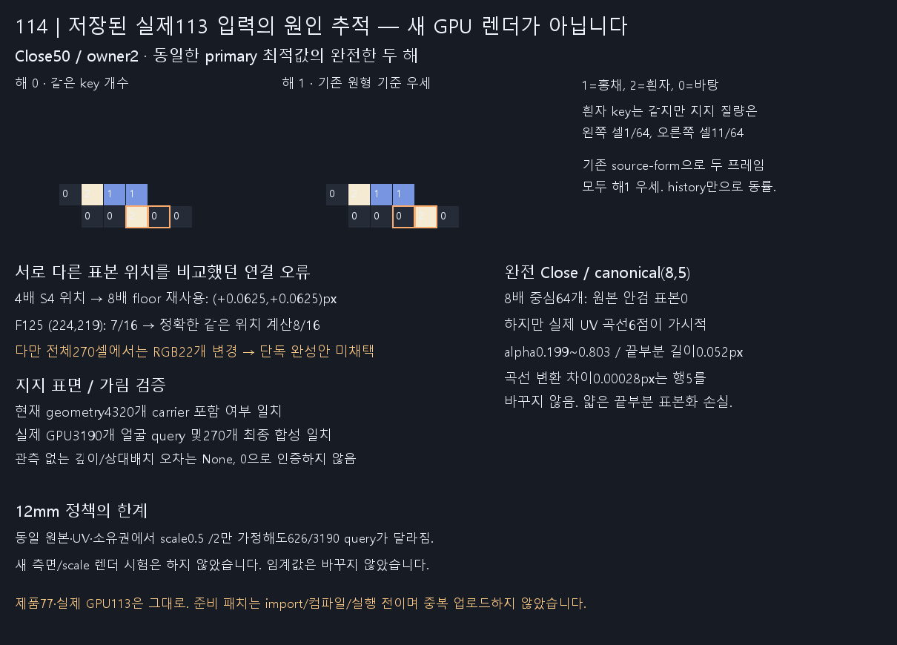

이번 작업의 Unity 호출·Play·Assets 수정·Library 업로드는 모두0입니다. 제품77과 실제 GPU113은 그대로입니다. 아래 그림은 원인 진단 마스크이며 새 런타임 렌더나 미술 개선 완료본이 아닙니다.

핵심 원인·좌표·남은 두 질문 · 44검사 및 실제 입력 재현 범위 · 두 완전 동등해와 기존 원형 기준 재사용 · 안검1셀의 실제 UV·평가 정점 대조 · 함수 위치 · 270셀 상세 대응 · 최소 표본 연결 수정 패치 · 기존 실제 GPU113 렌더
paired-point-patch의 C#/HLSL은 검토용이며 import/컴파일/Play되지 않았습니다. 기존 실행기의 절대 경로와 출력값이 포함되어 있으므로 그대로 실행하지 마십시오. 다음 실행에는 새 sourceId·출력 폴더와 전체 외부 runner 재구성이 필요합니다. 표본 좌표 수정만으로 전체 소유권/가림 회귀를 통과하지는 않았습니다.
기존 인계: §114. 이 폴더의 python -B check114.py로 저장소의113 ZIP 및109/110/2.2/111 함수를 재사용해 오프라인 검산할 수 있습니다. 필요한 NumPy/Pillow는 기존 환경 그대로이며 새 설치는 없습니다. 전체 재분석은 trace114.py --all-selected, pairing114.py --all-selected, tie114.py, pigment114.py 순서입니다.